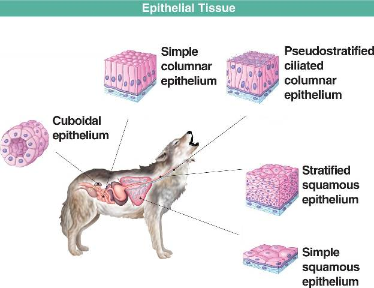
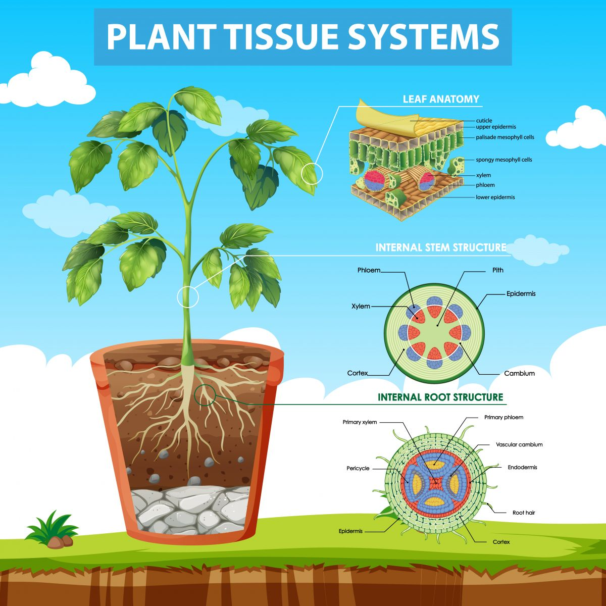

Struktur jaringan hewan

- Jaringan Epitel : LJaringan yang berfungsi sebagai pelapis organ dan rongga tubuh bagian luar hewan. Terdiri dari sel-sel yang rapat dan berdekatan satu dengan yang lain sehingga tidak ada rongga antarsel. Terdapat beberapa jenis sel epitel, seperti sel epitel pipih, sel epitel kubus, dan sel epitel silindris
- Jaringan Otot: Jaringan yang berfungsi untuk membentuk otot dan membantu proses pergerakan hewan beserta organ di dalamnya. Terdiri dari sel-sel otot yang panjang dan berbentuk silinder. Terdapat tiga jenis jaringan otot pada hewan, yaitu otot lurik, otot polos, dan otot jantung
- Jaringan Pengikat.: Jaringan yang berfungsi untuk mengikat antara jaringan tubuh yang ada. Terdiri dari bahan interseluler antara sel-selnya, biasanya disebut matriks ekstraseluler. Terdapat dua jenis jaringan pengikat pada hewan, yaitu jaringan ikat longgar dan jaringan ikat padat
- Jaringan Saraf: Jaringan yang berfungsi untuk mengirimkan impuls listrik dari satu bagian tubuh ke bagian tubuh lainnya. Terdiri dari sel-sel saraf yang panjang dan bercabang-cabang. Terdapat dua jenis sel saraf, yaitu sel saraf sensorik dan sel saraf motorik
- Jaringan Darah: OJaringan yang berfungsi untuk mengangkut oksigen, nutrisi, dan zat-zat lain ke seluruh bagian tubuh. Terdiri dari sel-sel darah, seperti sel darah merah, sel darah putih, dan trombosit. Terdapat dua jenis pembuluh darah pada hewan, yaitu arteri dan vena
- Mitokondria: Organel yang berfungsi sebagai tempat proses respirasi untuk menghasilkan energi
Apa itu Jaringan
Organisasi tingkat jaringan adalah kumpulan sel yang memiliki bentuk, susunan, dan fungsi yang sama. Jaringan terdiri dari sel-sel yang bekerja sama untuk menjalankan tugas tertentu. Contoh jaringan pada hewan meliputi jaringan epitel, jaringan ikat, jaringan otot, dan jaringan saraf. Sedangkan contoh jaringan pada tumbuhan meliputi jaringan meristem dan jaringan pembuluh. Jaringan memiliki peran penting dalam proses pembentukan struktur dasar pada bagian tubuh makhluk hidup. Jaringan mampu bekerja secara bersamaan dalam rangkaian fungsi tertentu dalam proses pembentukan organ. Organisasi tingkat jaringan terbagi menjadi jaringan pada hewan (termasuk manusia dan organisme multiseluler tingkat rendah) dan jaringan pada tumbuhan
Struktur jaringan tumbuhan

Jaringan Meristem: Jaringan utama dari tumbuhan. Terdiri dari sel-sel embrional yang aktif membelah diri. Terdapat tiga macam jaringan meristem pada tumbuhan, yaitu promeristem, meristem primer, dan meristem sekundern
Jaringan Epidermis: Jaringan pelindung pada tumbuhan. Terletak di bagian luar setiap organ tumbuhan. Terdiri dari sel-sel yang rapat dan memiliki dinding sel tipis
Jaringan Parenkim: Jaringan yang memiliki dinding sel tipis dan berbentuk kubus atau segiempat. Terdapat di seluruh bagian tumbuhan. Berfungsi sebagai pembuat zat makanan, menyimpan cadangan makanan, menyimpan air, menyimpan udara, dan jaringan regenerasi
Jaringan Penyokong: Jaringan yang berfungsi untuk menunjang bentuk tumbuhan agar dapat berdiri dengan kokoh dan kuat. Terdiri dari jaringan kolenkim dan sklerenkim. Kolenkim adalah jaringan yang memiliki banyak sifat dan bisa berbaur dengan jaringan yang di dekatnya. Sklerenkim adalah jaringan penunjang yang terdapat pada tumbuhan yang telah dewasa